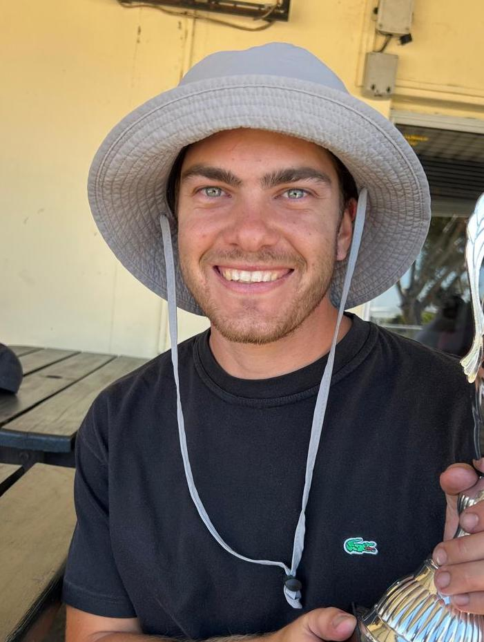

James Strahlendorf

I am hardworking and inovative thinker. I love a new challenge and learning new skills.
My various work experience proves my ability to grasp new skills and implement quality work quickly and effectively.
Working in a team comes naturally to me and plays strongly into my time management skills.
I also thrive in independent problem solving. In my spare time I love to race and ride motorcycles, be active with friends and play guitar.
Education
- Rondebosch Boys' High School (2013-2017)
- University of Capetown (2019-2022)
BSc (Hons) in Biology, UCT, 2022
BSc in Biochemistry and Biology, UCT, 2021
Work Experience
- Pinewood School, UK (2018)
Student Boarding House Haster and Science Teacher
- Drifter Brewing Company, Capetown (2020)
- Distell Beverage Group, Paarl (Jan 2023 - May 2023)
Lab Quality control
- Intramech (Pty) Ltd. , Capetown (Jun 2023 - Dec 2023)
Junior Controls Programmer.
- Streamline Milking Services (Pty) Ltd. , Malmebury (2024 - present)
Junior Managing Director
Skills
- Problem Solving
- Mechanical Engineering
- Staff management
Achievements
- Various DeLaval Dairy Equipment Certifications
- Completing the full Knysna Marathon
- WPMC 2025 Supermoto Champion
Contact me
My Hobbies